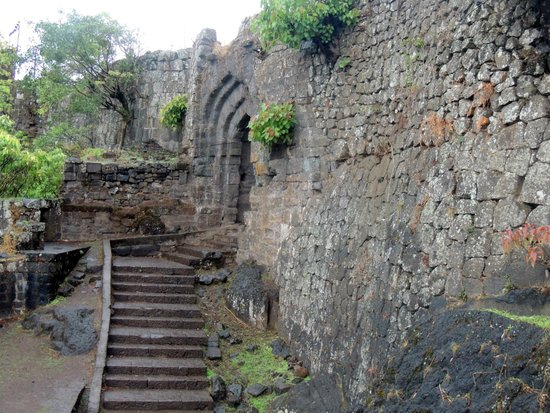

About
Perched at an elevation of 3,300 feet near Satara, Maharashtra, Fort Ajinkyatara offers breathtaking views of the surrounding landscapes and the Western Ghats. Built in the 16th century by the Shilahar dynasty and later fortified by the Marathas, the fort played a pivotal role in defending the region against the Mughals and British forces.
Known for its strategic location, Ajinkyatara's name means "Invincible Star," reflecting its impenetrable defense. The fort’s historical significance, combined with its natural beauty, makes it a must-visit for history buffs and adventure seekers alike.
Today, it stands as a popular tourist destination, with visitors enjoying scenic hikes, exploring the fort’s ruins, and witnessing the remnants of its glorious past. The temple of Khandoba, located within the fort, adds a spiritual touch to the site, making it an all-encompassing historical and cultural experience.
Ajinkyatara Fort
History of Fort Ajinkyatara
The fort was built in the 16th century and played a key role in the Maratha Empire's defense. It has witnessed many battles and is a symbol of Maratha military strength.
1. Construction and Early History: The fort is believed to have been constructed in the 16th century during the reign of the Shilahar dynasty. However, its prominence increased later during the Maratha Empire, specifically under the leadership of Chhatrapati Shivaji Maharaj.
2. Role in the Maratha Empire: The fort played a significant role in the Maratha Empire's defense strategy, particularly during the reign of Shivaji Maharaj. It was also a key military outpost during the wars against the Mughals and the British.
3. Decline and British Era: Over time, after the Maratha Empire's decline and the British gaining control of India, the fort lost its strategic importance. It remained under British control, and its military use diminished.
4. Present-Day Significance: Today, Ajinkyatara Fort is a popular tourist destination, offering spectacular views and a glimpse into the rich history of the Marathas. The fort's historical ruins are still a testament to its once-great military importance.
Video Tour of Fort Ajinkyatara
Gallery
How to Visit
The fort is easily accessible from Satara city by road. Visitors can enjoy a scenic drive leading up to the fort. It is open year-round, but the monsoon season offers an especially beautiful experience.
https://maps.app.goo.gl/5pbpFbZwwiGwBWFX7